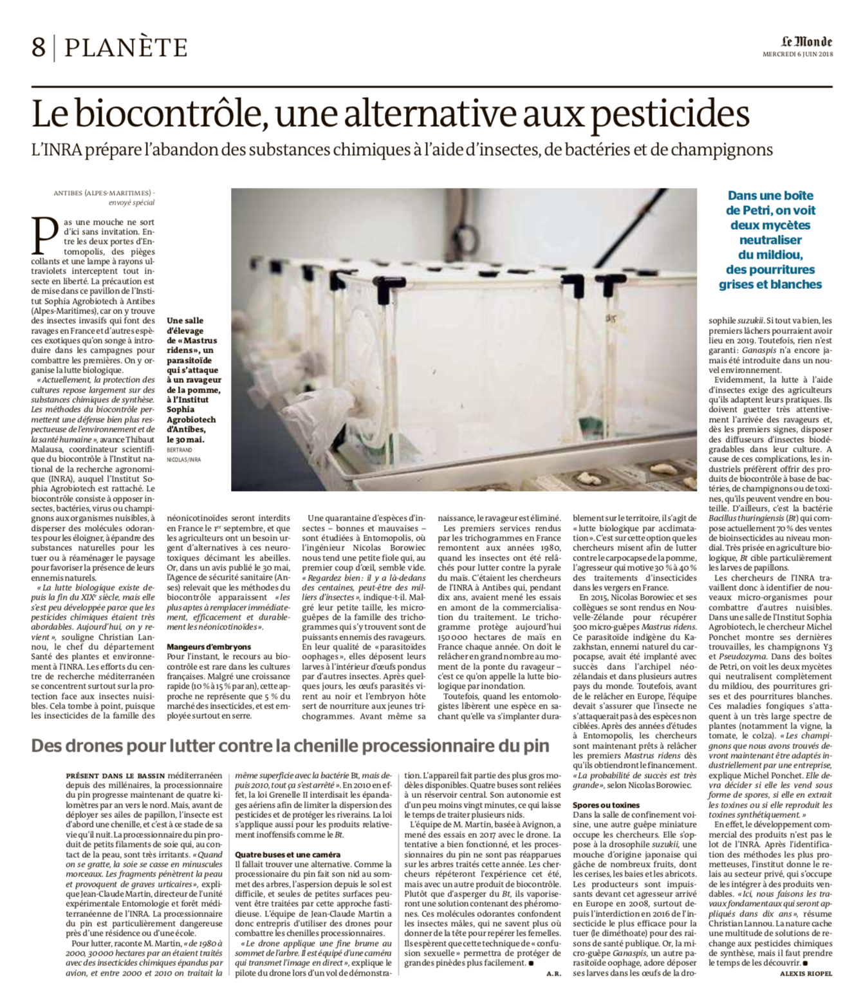
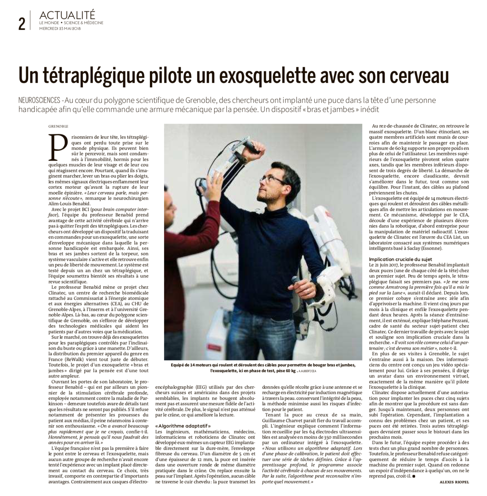
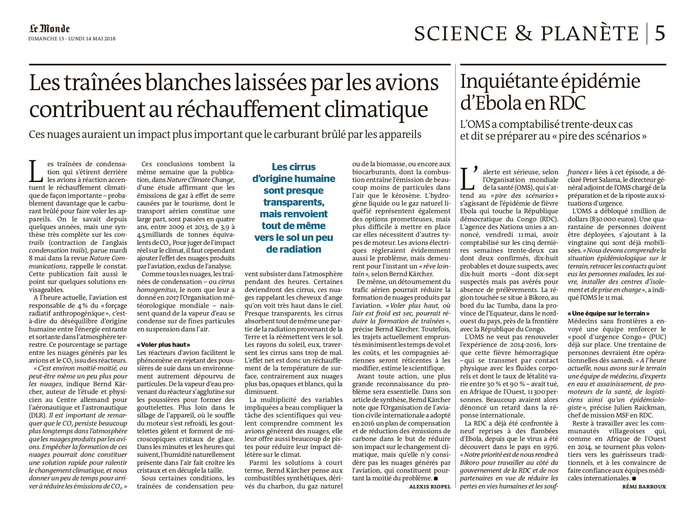
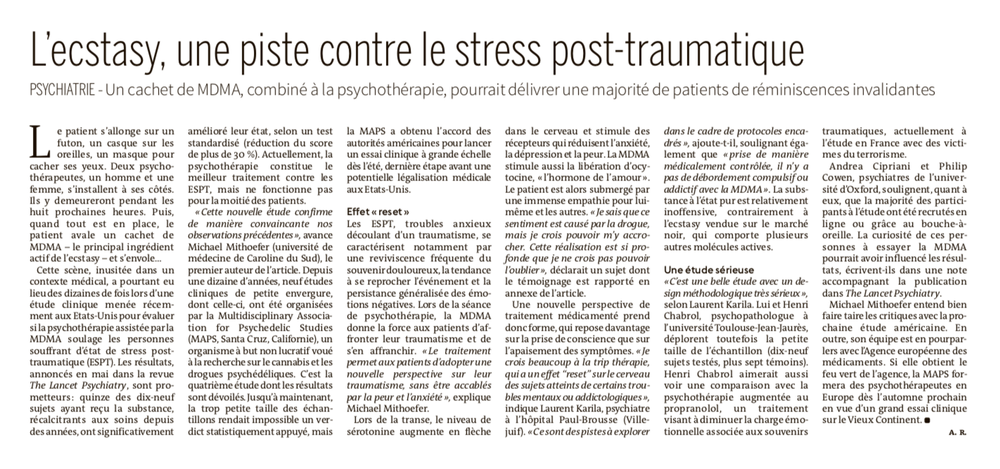
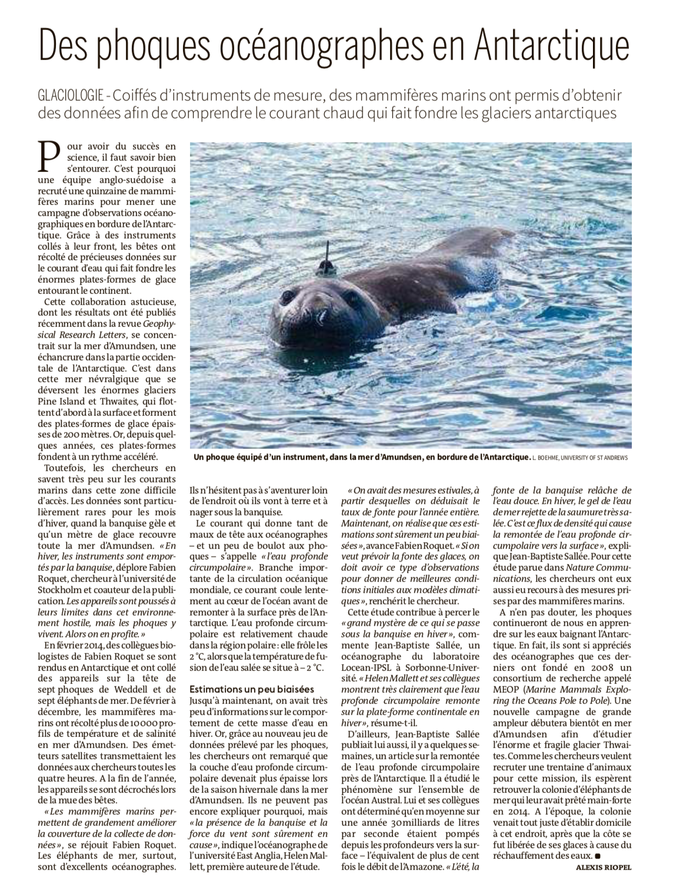
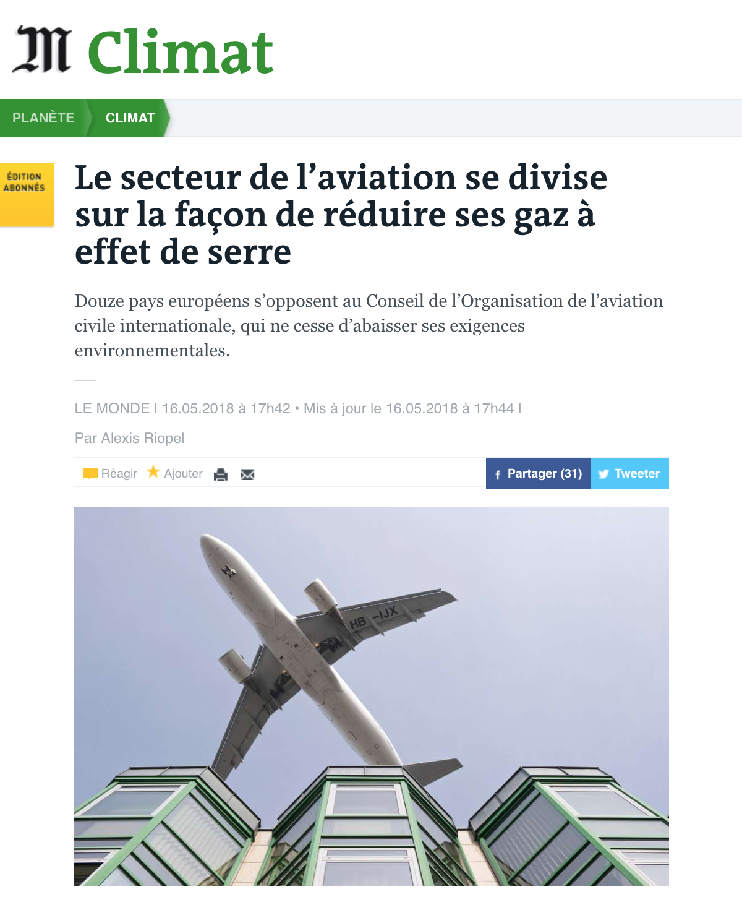
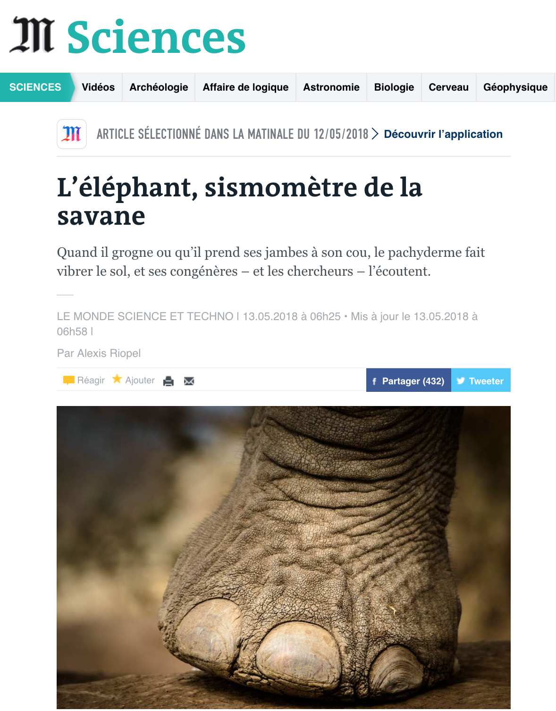
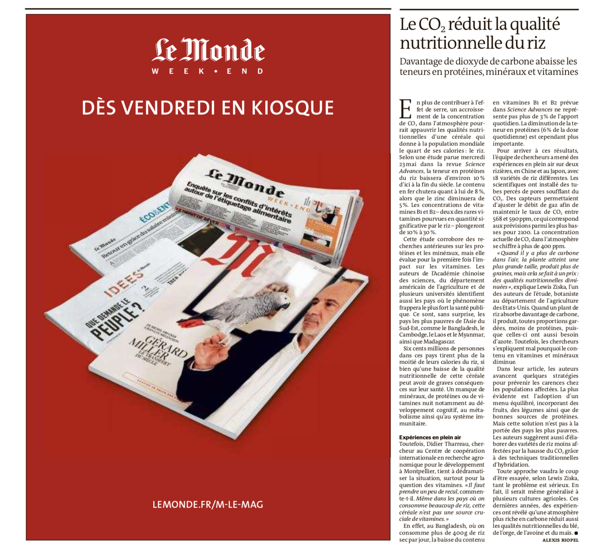

Alexis Riopel
riopelalexis [arobas] gmail.com
Mémoire de maîtrise
Curriculum vitæ
Portfolio
Le Devoir
Québec Science
Le Monde
La Presse
Radio-Canada
Autres
Photos
Portraits
Pérou, Bolivie et Chili
Nouvelle-Zélande

Le Monde — 6 juin 2018

Le Monde — 21 mai 2018

Le Monde — 12 mai 2018

Le Monde — 21 mai 2018

Le Monde — 6 juin 2018

Le Monde — 16 mai 2018

Le Monde — 13 mai 2018

Le Monde — 23 mai 2018